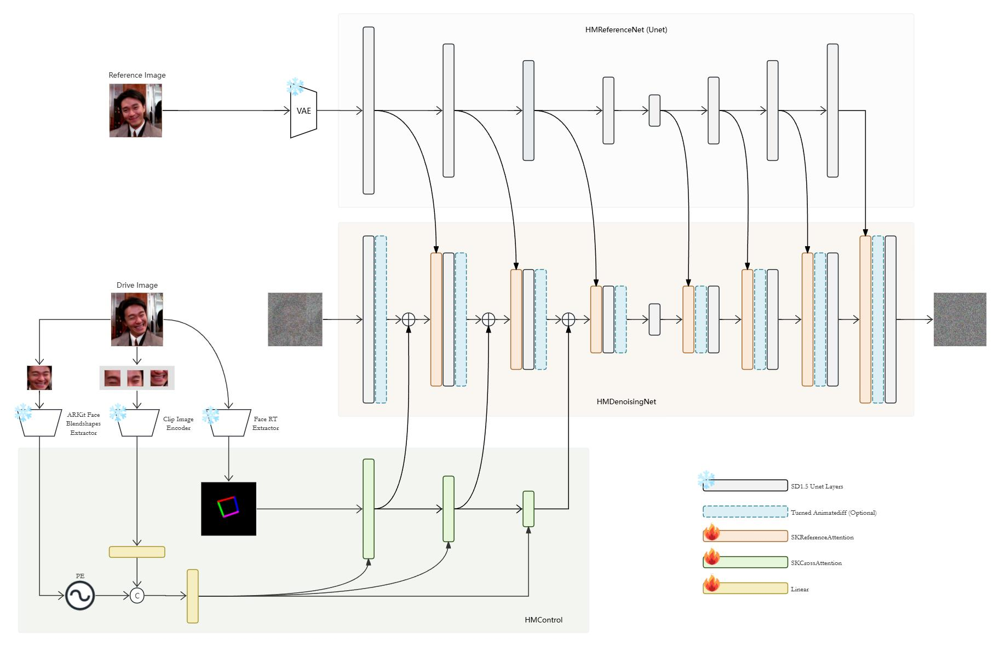
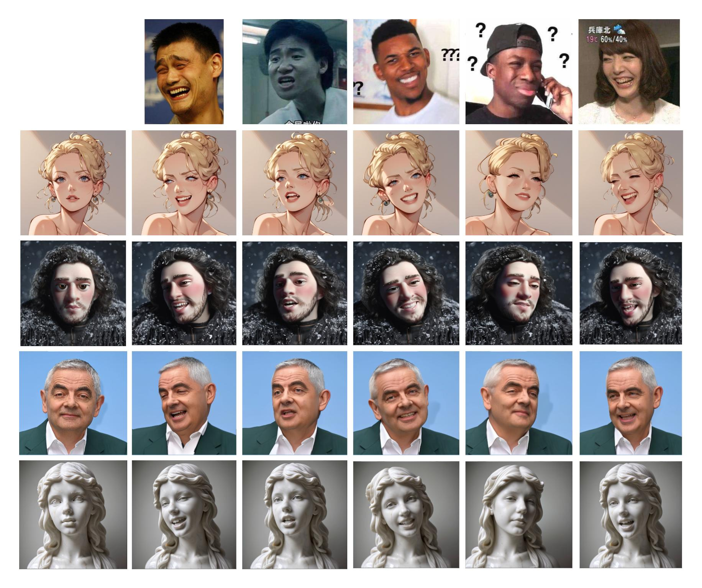

HelloMeme: Integrating Spatial Knitting Attentions to Embed High-Level and Fidelity-Rich Conditions in Diffusion Models
Anonymous
HelloVision
Technical Report
Code
arXiv
Source of material:
XiongZhuying 熊竹英
Black Myth:Wukong 黑神话：悟空
Method

Network Structure
Image Generate

Motion Module
Expression Edit
With SD1.5 based Lora or Checkpoint
Comparison with other Methods